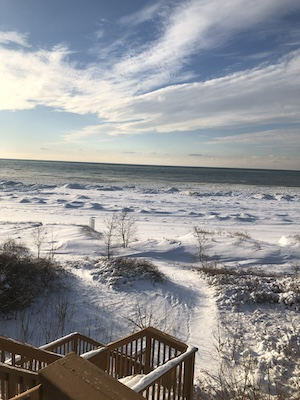
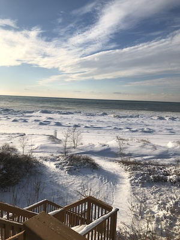

South Haven is a very special place for me. It's a small town on the western coast of Michigan about an hour drive from Grand Rapids and a 2 hour drive from Chicago. We started visiting in 2007, and in 2014 purchased the home we'd been renting for the previous seven years. We continued to live there in the summers until 2020 where we moved there for about a year. While these photos of the surrounding environment don't do the town justice, I still think they capture a little bit of what makes the town so special to me.

 


The same view in four different seasons. From Summer(2023) to Fall(2022), to Winter(2022), then to Spring(2021).

Two photos from the Kal-Haven Trail. One is a photo of the gazebo that is now flooded by the Black River (2021). The other is a reflection in the river showing the trees above it (2019).

Two photos of South Haven in Fall. A red tree in my friend's front yard (2022) and a cleared swamp on the Kal-Haven Trail (2021). Unfortunately, these kinds of colors on trees haven't shown up in South Haven as often as they did about a decade ago due to shifting climates.


Two photos taken during the 2020 pandemic. The first is of some small blue flowers on the side of Baseline Road near Blue Star Highway. The second is of the Neowise Comet on August 11, 2020 from my back porch.